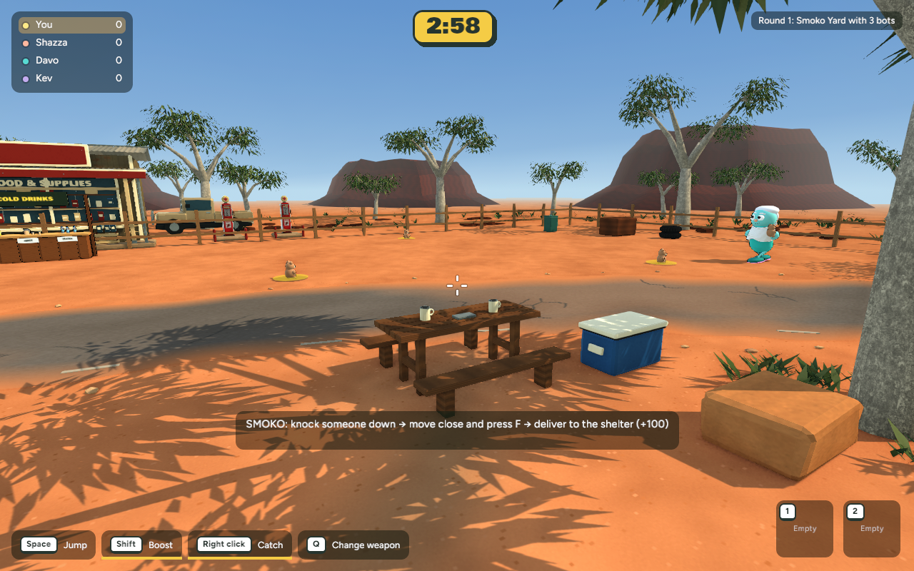
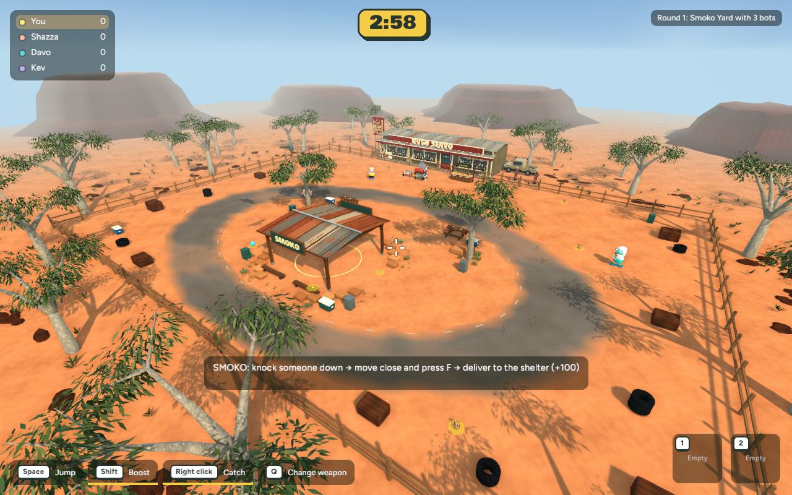
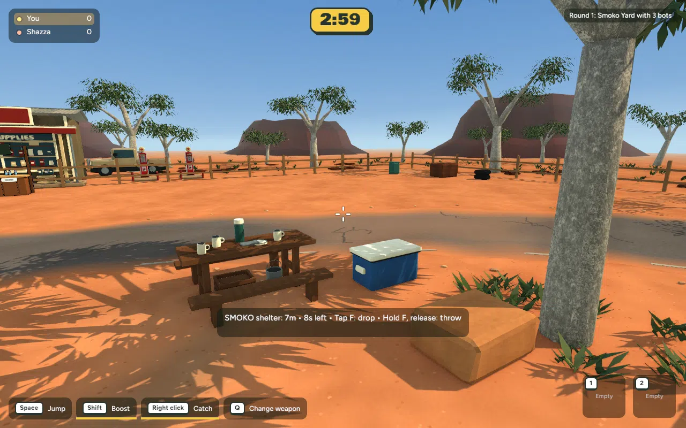

Actual game captures — completed 31 October 2026. Ten new small objects: two crates, two buckets, two thermoses, two plates and two extra mugs. Restrained dust/scuffs on the existing prop kit, with the ground update preserved.
These are decorations, not new throwable pickups. Crates and buckets fit inside existing table collision boxes; routes stay clear.



Existing solid bounds verified; Smoko delivery and Backyard smoke checks pass. +9,336 triangles, +0.51 MB GLB, unchanged ten material batches. Mean timings close to baseline; p95 rises slightly. Browser-device performance not measured.
Local review only — not committed or published.
Changes, verification and recovery